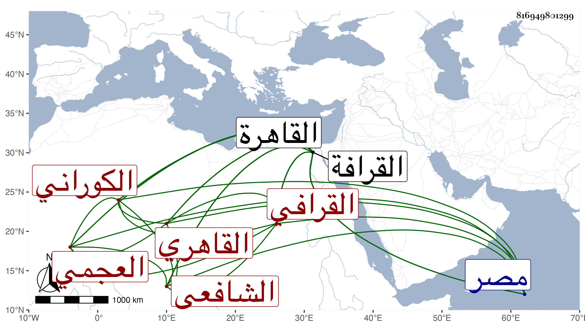

0902Sakhawi.DawLamic.ITO20230111-ara1.EIS1600.816949801299
Biography ID: 816949801299
67
علي بن محمد بن يوسف بن عبد الله بن عمر بن علي بن خضر النور ابن التاج بن الجمال أبي المحاسن الكوراني العجمي الأصل ثم القرافي القاهري الشافعي الآتي أبوه وأخوه محمد ويعرف بحفيد الشيخ يوسف العجمي . ولد قبيل القرن بيسير بالقرافة ونشأ بها فحفظ القرآن عند الفقيهين محب الدين ولم ينسبه وعلى العوفي المغربي وصلى به في زاويتهم بالقرافة ، وعمل له عمه الشهاب أحمد الماضي خطبة بليغة ضمنها أسماء سور القرآن سمعتها منه ، وكان والده يحضه على بيان إعجام الذال ، وكذا حفظ التنبيه وعرض على جماعة واشتغل يسيرا على غير واحد من فضلاء جماعة جده كالشيخ محمد العطار وتلقن من أبيه وغيره ، وأجاز له ابن صديق وابن قوام والبالسي وابن منيع وابنة ابن المنجا وسائر من أجاز لأخيه في سنة إحدى وثمانمائة تفرد بالرواية عن جمهورهم ، وحج في سنة خمس وعشرين ثم مع الرجبية ولقيته هناك بعد أن لقيه بالقاهرة وأجاز لي وسمعت من فوائده ، وأكثر من الرواية بأخرة ممن لا يحسن القراءة ويقرأ عليه ما ليس من مروي شيوخه فكان ذلك باعثا للشهاب المنزلي أحد فضلاء جماعتنا على تخريج شيوخه مستوعبا ما علمه من مروياتهم بمراجعتي ثم قرأها عليه بحضرتي مع إخباري في كل حديث من أحاديثها بسندي وسمع ذلك الجم الغفير وهو خير متواضع وقور سليم الفطرة محب في الطلبة يستحضر أشياء ، عمر إلى أن مات في ليلة الخميس عاشر جمادى الثانية سنة تسعين بمنزله بمصر القديمة كان تخول إليه قبيل موته بيسير وصلي عليه من الغد ودفن بزاويتهم داخل المقصورة تحت رجلي والديه بوصية منه رحمه الله وإيانا .
